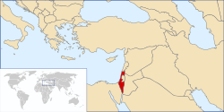
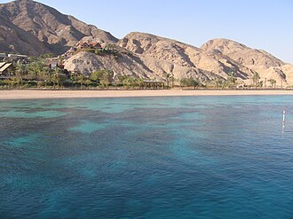

Cuba
To know:

Capital: Jerusalem
Form of State: Parliamentary Republic
President: Isaac Herzog
Prime Minister: Benjamin Netanyahu
Population: About 9.8 million (2024)
Languages: Hebrew (official), Arabic (special status)
Currency: Israeli New Shekel (ILS)
Israel is a country located in the Middle East, bordering the Mediterranean Sea, Egypt, Jordan, Lebanon, and Syria. It was established in 1948 as a homeland for the Jewish people. Israel is a technologically advanced nation known for its innovation, diverse culture, and historical significance to the three major monotheistic religions: Judaism, Christianity, and Islam.
Culture
Israeli culture is a blend of Jewish traditions from around the world, Middle Eastern influences, and modern Western elements. Music in Israel ranges from traditional folk and religious songs to contemporary pop, rock, and electronic genres. Well-known artists include Ofra Haza, Arik Einstein, and Netta Barzilai, winner of the 2018 Eurovision Song Contest.
Israel has a vibrant film, theater, and literature scene. Writers like Amos Oz and David Grossman have earned international recognition. Cultural life is also marked by national holidays such as Yom Kippur, Passover, and Independence Day (Yom Ha'atzmaut).
Religion
Israel is the only country in the world where Judaism is the majority religion. About 74% of the population is Jewish, with significant Muslim, Christian, and Druze minorities. Religion plays a major role in public life, national identity, and politics. The city of Jerusalem is sacred to the three monotheistic religions and is home to major religious sites such as the Western Wall (Kotel), the Church of the Holy Sepulchre, and the Al-Aqsa Mosque.
Judaism is one of the oldest monotheistic religions, dating back over 3,000 years. It is based on the belief in one God and the teachings of the Torah, the first five books of the Hebrew Bible. Jewish religious life is structured around commandments (mitzvot), holidays, rituals, and study. Major Jewish texts include the Tanakh (Hebrew Bible) and the Talmud, a collection of rabbinic discussions on law, ethics, customs, and history.
Important practices in Judaism include:
- Shabbat (the Sabbath) – A day of rest and spiritual enrichment, from Friday evening to Saturday evening.
- Kosher dietary laws – Regulations concerning what foods can be eaten and how they must be prepared.
- Prayer – Practiced three times daily (morning, afternoon, and evening) in traditional communities.
- Circumcision – A covenant ritual for Jewish male infants, typically performed on the 8th day after birth.
Major Jewish holidays include:
- Rosh Hashanah – The Jewish New Year
- Yom Kippur – The Day of Atonement, the holiest day of the year
- Passover (Pesach) – Commemorating the Exodus from Egypt
- Hanukkah – Celebrating the rededication of the Temple in Jerusalem
- Sukkot, Shavuot, and Purim – Other important festivals with historical and agricultural significance
Judaism in Israel includes a wide range of observance levels, from secular Jews to Orthodox and ultra-Orthodox communities. Religious institutions, such as the Chief Rabbinate, play a role in personal status laws like marriage, divorce, and conversion. Despite being a secular democracy, Israel incorporates religious traditions into many aspects of public life.
